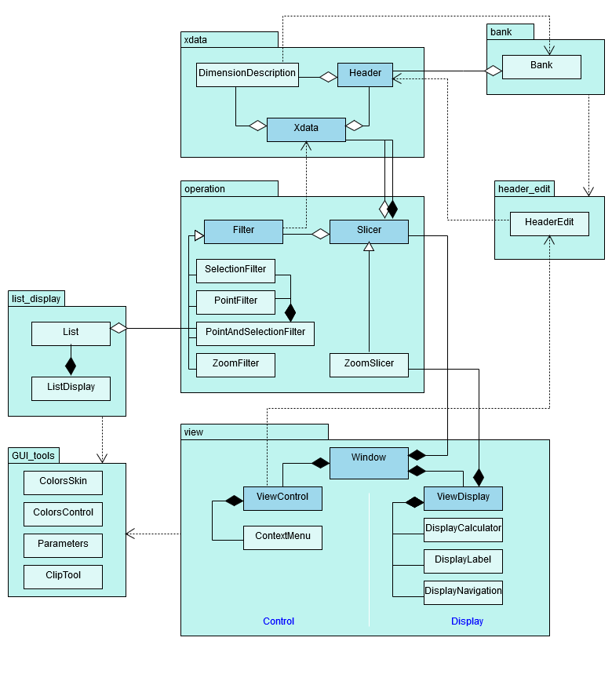
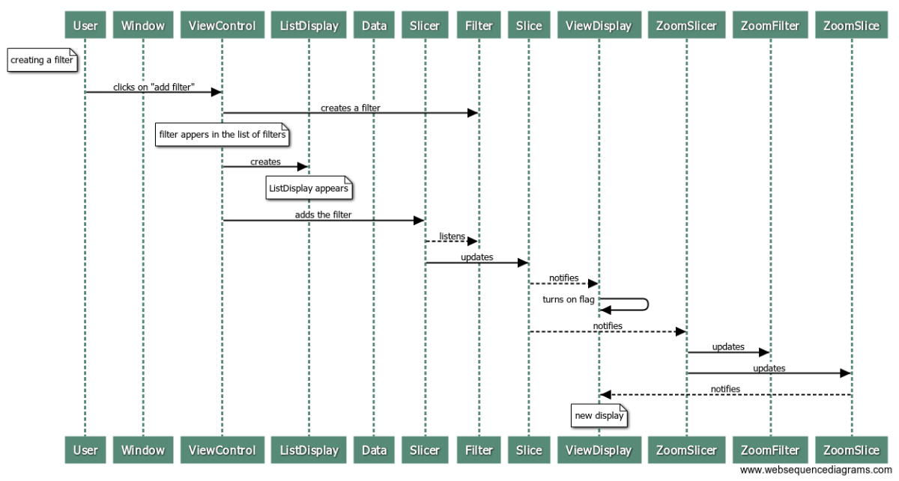

Structure¶
UML diagram of all Xplor’s modules¶
UML diagram of the global structure of the toolbox
Presentation of the modules¶
The three main modules are xdata, operation and view.
The module xdata aims at the creation of a container for the N dimensional data and all the relative information on the dimensions and the data itself. Here is an example of a Xdata instance and one of it’s header:
Example of a MeasureHeader instance
Example of a Xdata instance
view‘s main class is Window. Window creates the canvas (i.e. the window) on witch to display the data. This canvas is composed of a control zone, where the user can select the filters to apply, and a display zone, in which the user can zoom and change the labels’ position. Window also possesses a Slicer instance and a ZoomSlicer instance to apply the correct filters on the Xdata instance.
Screenshot of the Window with the control zone and the display zone

The module operation contains different types of Filters as well as a Slicer class and a ZoomSlicer class that will apply a succession of Filters on the Xdata instance. The result of this operation is what is going to be displayed on the canvas.
The interactions between the various classes are illustrated by the sequence diagrams bellow.
Sequence Diagram of the creation of a Window and the creation of a filter
Sequence Diagram for a zoom action
list_display‘s main class is ListDisplay. It is an interface for the user to select what data is to be displayed. For each filter created from the control zone of a Window instance, a new List instance appears.
Screenshot of the ListDisplay
Sequence Diagram of the modification of a filter
bank is used to store previously used Headers and units, to save the user some time.
header_edit allows the initialisation of a Xdata element : the user specifies the headers’ labels and units. It suggests some previously used labels and units thanks to Bank.
GUI_tools is a set of tools for the interface.